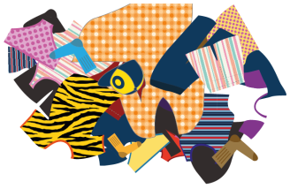
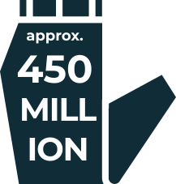
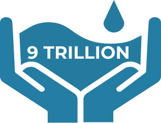
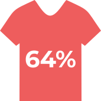
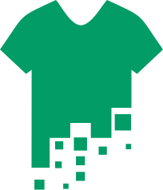
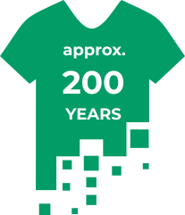

<!DOCTYPE html>
<html>
    <head>
        <meta charset="UTF-8">

        <title>Sustainability Infographic</title>
        <link href="css/main.css" rel="stylesheet" type="text/css">

        <link href="css/home.css" rel="stylesheet" type="text/css">

        <link href="css/sadGirl-section.css" rel="stylesheet" type="text/css">
        <!-- <script src="js/sadgirl.js"></script>  --> 
        <!-- this script is placed at the end of section b -->

        <link href="css/frame3.css" rel="stylesheet"> 

        <link href="css/quiz.css" rel="stylesheet" type="text/css">
        <script src="js/quiz.js"></script>

        <link href="css/lastpage.css" rel="stylesheet" type="text/css">

        
        <link rel="preconnect" href="https://fonts.gstatic.com">
        <link href="https://fonts.googleapis.com/css2?family=Lexend+Giga&display=swap" rel="stylesheet">
        <link href="https://fonts.googleapis.com/css2?family=Montserrat:wght@500&display=swap" rel="stylesheet">
    
    
    </head>
</html>
<body class="flex">
    <div class="main flex flex-column">
<!-- ====================================================================================
                section a: starting page + beginning of clothing waste section
======================================================================================-->
        <div id="frontpage" class="flex flex-column">
            
            <p class="slogan">THE IMPACT OF</p>
            
            <p class="slogan">ON OUR ENVIRONMENT</p>
            
            <p>Scroll Down</p>
        </div>


        
        <div id="description" class="flex">
            <div id="box" class="flex">
                <p id="details">
                Producing fast fashion items is
                    to get as many products as
                    they can into the market quickly.
                    This means that caring about the
                    environment, and the effects they
                    have on it don’t play a part.
                     <br>
                     <br>
                    Here is a list of ways the fast
                    fashion industry is causing issues
                    on our environment.</p>
            </div>
            
        </div>
        <div class="flex flex-row" id="thread">
            
        <div id="unwindinfo">
            <p id="unwind">Click the thread to unwind information</p>
        </div>
    </div>
    <div id="arrow">
        
    </div>
        <div id="clothing-waste">
            <h1 class="headerMargin">clothing waste</h1>
            <p id="sub-heading">in North America,</p>
        </div>

        <div id="garbage" class="flex flex-row">
                
                <div class="flex-column">
                    <p id="clothing-info" class="alignRight greyText">10,000<br> million kg</p>
                    <p id="clothing-small-info" class="alignRight">of clothing<br> is thrown away<br> each year.</p>
                </div>
        </div>
        <div>
            <p>and</p>
            <p id="percent" class="greyText">95%</p>
            <p>could have been</p>
        </div>
        <div class="flex flex-row spacingMargin">
            <div class="flex flex-column">
                <p class="slightBold">repurposed</p>
                
            </div>
            <div id="or-text">
                <p id="or">or</p>
            </div>
            <div class="flex flex-column">
                <p class="slightBold">recycled</p>
                
            </div>
        </div>

<!-- ======================================================== 
                section b: sad girl clickable section
==========================================================-->
        <div>
            <p>Fast fashion spreads a message that if you wear clothes that are out of season, 
                it means you're our of style.</p>
            <div id="sadGirlSection" class="spacingMargin">
                <div class="flex flex-row biggerSpacing">
                    
                    
                </div>
                <div class="hidden" id="hide">
                    <p id="text1">"that shirt<br> is so last <br>month"</p>
                    <p id="text2">"eww"</p>
                    <p id="text3">"when was <br>the last time <br>you bought <br>something <br>new?"</p>
                </div>
            </div>
            <p>This encourages people to shop at fast fashion stores to buy the most up to date clothes,
                and to discard their older items.</p>
        </div>

        <script src="js/sadgirl.js"></script>
<!-- =============================================================
                section c: start of water consumption section
===============================================================-->
        <h1 class="headerMargin">water <br> consumption</h1>
        <div class="equalSection">
            <p>The amount of water <br>used to make a cotton <br> t-shirt:</p>
            <div class="flex flex-row spaceAround">
                
                <h1 class="equalSign" id="toLeft">=</h1>
                <div class="flex flex-column">
                    
                    <p class="greyText"><b>2,700L <br>of water</b></p>
                </div>
            </div>
        </div>
        <div class="equalSection">
            <p>The average amount of <br>water a person needs a <br>day:</p>
            <div class="flex flex-row spaceAround">
                <div class="flex flex-column">
                    
                    <p class="greyText"><b>3L <br>of water</b></p>
                </div>
                <h1 class="equalSign">=</h1>
                
            </div>
            <h2 class="bolded">therefore...</h2>
            <div class="flex flex-row lastDiv">
                <p>The amount of <br>water used on <br>a cotton t-shirt <br>can help save 
                    many lives.</p>
                
            </div>
        </div>
<!-- =============================================
                section d: quiz 1 - jeans
==================================================-->
        <div class="waterQues">
            <section class="question flex-column flex" id="jeansQuestion">
                <h3 class="qHead qHeadW"><b>How much water is needed to make this pair of jeans?</b></h3>
                <div class="q_img">
                    
                </div>

                <div class ="flex-row flex options">
                    <ul id="water_options">
                        <li>20L</li>
                        <li>200L</li> 
                        <li>2,000L</li>
                        <li>20,000L</li>
                    </ul>
                </div>

                <div id="correctAns1" class="correctAns off off1">Correct!</div>
            </section> <!--water consumption question-->

            <section id="wrongAns1" class="wrongAns column">
                <h2 class="oops">Oops!<br>Wrong Answer,<br>Please Try Again!</h2>
                <div class="sad_girl">
                    
                    <p class="click_me"><b>Click me to try again!</b></p>
                </div>
            </section> <!--wrong answer-->
        </div>
<!-- ===================================================================================
                section e: end of water consumption, beginning of synthetic fibres
=====================================================================================-->
        
        <h2 class="bolded"><b>20,000L of Water</b></h2>
        <p>is used to create <b>one</b> pair of jeans</p>
        <div class="flex flex-row spacingMargin">
            
            <p>jeans are sold in the US per year</p>
        </div>
        <p><b>thats</b></p>
        <div class="spacingMargin">
            
            <h2 class="bolded"><b>litres of water per year!</b></h2>
        </div>

        <h1 class="headerMargin">synthetic fabrics & chemicals in cheap dyes</h1>
        <div class="flex flex-row spacingMargin">
            
            <p>of all fabrics are made of plastic</p>
        </div>
        <div class="flex flex-row spacingMargin">
            <p>Just washing a batch of clothes can create 17 million microfibres</p>
            
        </div>
        <div class="flex flex-row spacingMargin">
            
            <p>Microfibres can be found in the air, rivers, drinking water, and the ocean</p>
        </div>
        <div class="flex flex-row spacingMargin">
            <p>Cheaper price/quality dyes contain many different harsh toxins</p>
            
        </div>
<!-- ===================================================================================
                section f: quiz 2 - synthetic fibres 
                (images are in d-images folder)
=====================================================================================-->
        <div class="decompQues">
            <section class="question flex-column flex" id="decompQuestion">
                <h3 class="qHead">Approximately how many years do you think it takes for synthetic clothes to break down?</h3>

                <div class="q_img">
                    
                </div>

                <div class ="flex-row flex options">
                    <ul id="decom_options">
                        <li>~50 Years</li>
                        <li>~100 Years</li> 
                        <li>~200 Years</li>
                        <li>~500 Years</li>
                    </ul>
                </div>

                <div id="correctAns2" class="correctAns off">Correct!</div>
            </section> <!--water consumption question-->
            
            <section id="wrongAns2" class="wrongAns flex-column">
                <h2 class="oops">Oops!<br>Wrong Answer,<br>Please Try Again!</h2>
                <div>
                    
                    <p class="click_me">Click me to try again!</p>
                </div>
            </section> <!--wrong answer-->
        </div>
        <!-- ===================================================================================
                        section g: end of synthetic fibres + entire ending section
        =====================================================================================-->
        
        <p class="boldText1">UP TO 200 YEARS</p>
        <p>It takes up to 200 years to break down one piece of
        synthetic clothing</p>

        <div class="flex-row flex spacingMargin">
            
            <p class="alignRight">It takes up to 200 years for synthetic 
            clothings to break down</p>
        </div>
        
        <div class="flex-row flex spacingMargin">
            <p class="item">As for cotton clothing, it takes a few months if 
                placed in the right compost.</p>
            
        </div>

        <p class="boldText2">This could impact our <br>health if one were to <br>
            breathe/consume a lot of <br> microfibers and toxins in <br>
        their lifetime.</p>
        <h1 class="headerMargin">how to reduce <br>environmental <br>impact</h1>

        <div class="world flex flex-column">
            
            
        </div>

        <div class="flex flex-column list">
            <div class="spacingMargin">
                <h2 class="bolded">1. buy clothes from <br>sustainable brands</h2>
                
            </div>
            <div class="spacingMargin">
                <h2 class="bolded">2. buy clothes with <br>better quality</h2>
                
            </div>
            <div class="spacingMargin">
                <h2 class="bolded">3. think twice <br>before throwing out<br>your clothes</h2>
                
            </div>
            <div class="spacingMargin">
                <h2 class="bolded">4. reduce the <br>amount of times you<br>do your laundry</h2>
                
            </div>
            <h2 class="bolded biggerSpacing">And</h2>
            <h1 class="biggerSpacing"><b>USE OUR<br>APP!</b></h1>
            
            <h3 class="spacing5 bolded spacingMargin">Let's make the world a <br>better place!</h3>
        </div>
    </div>
</body>
